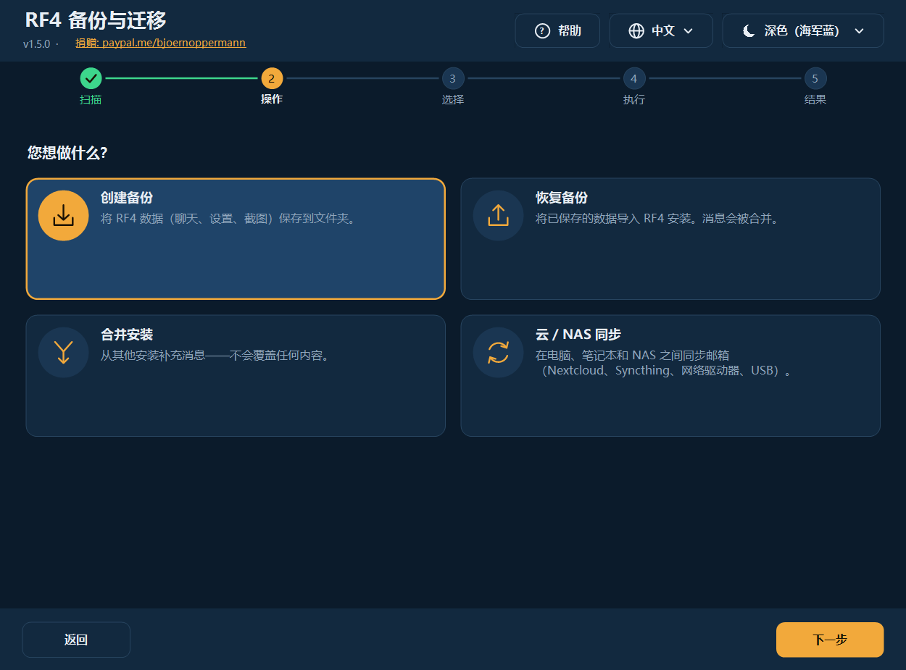
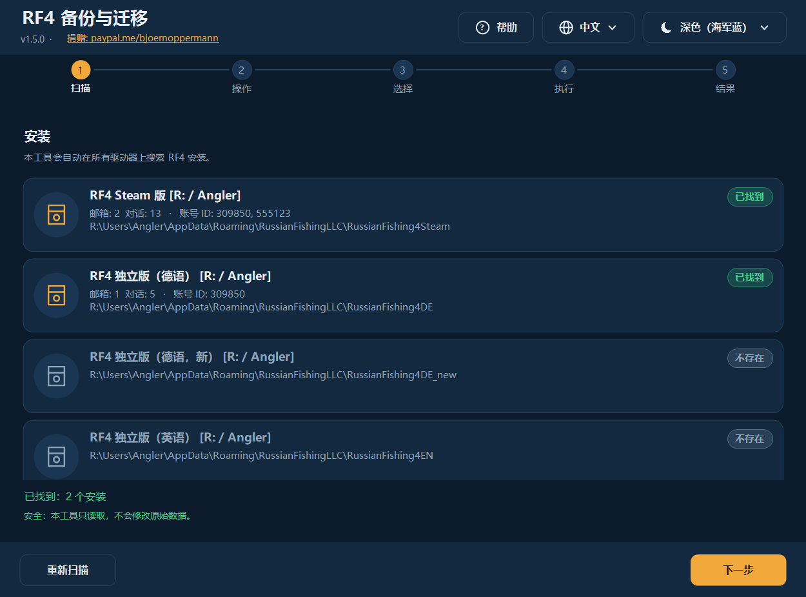
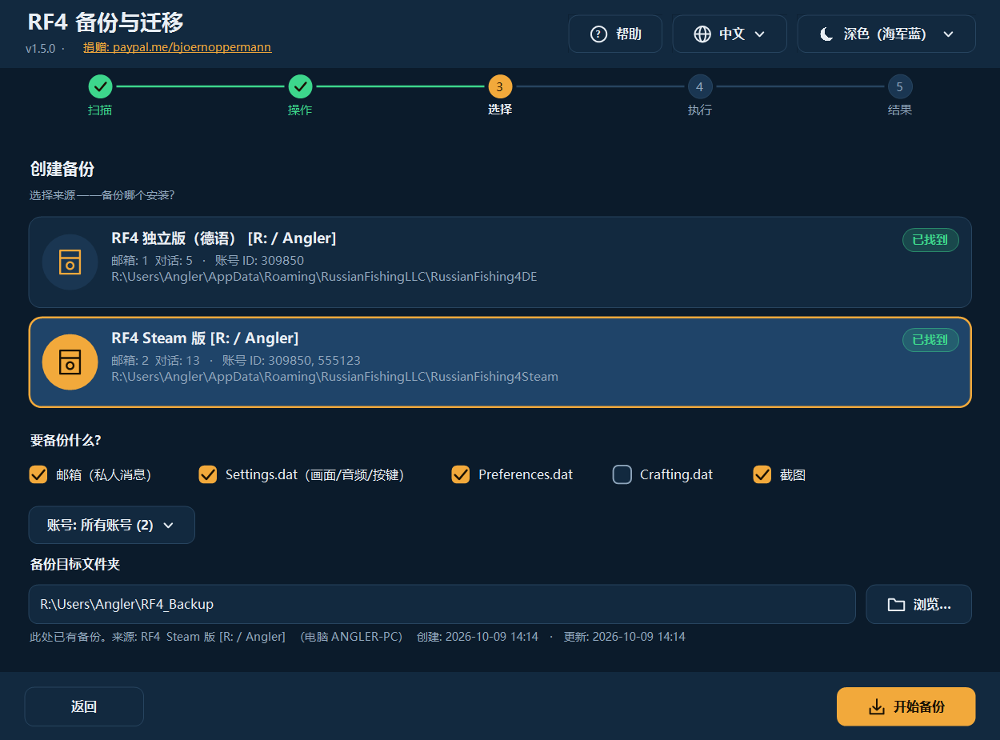
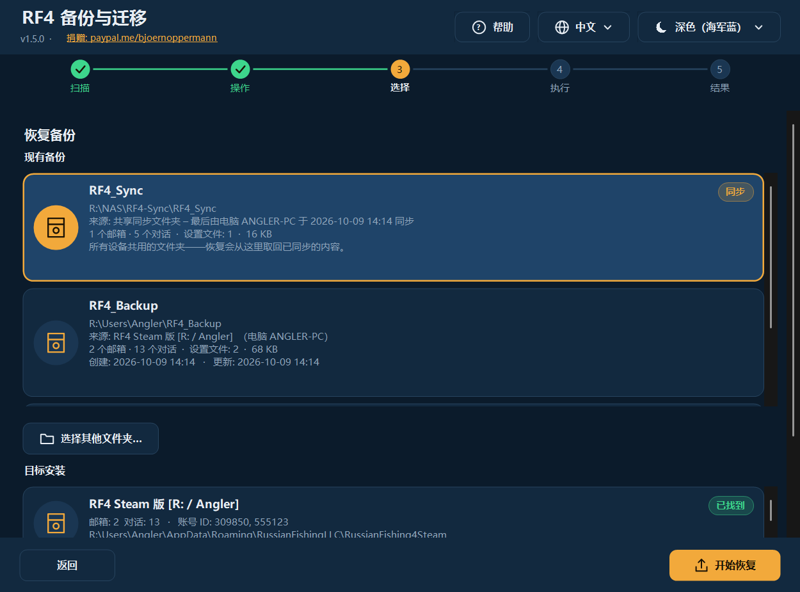
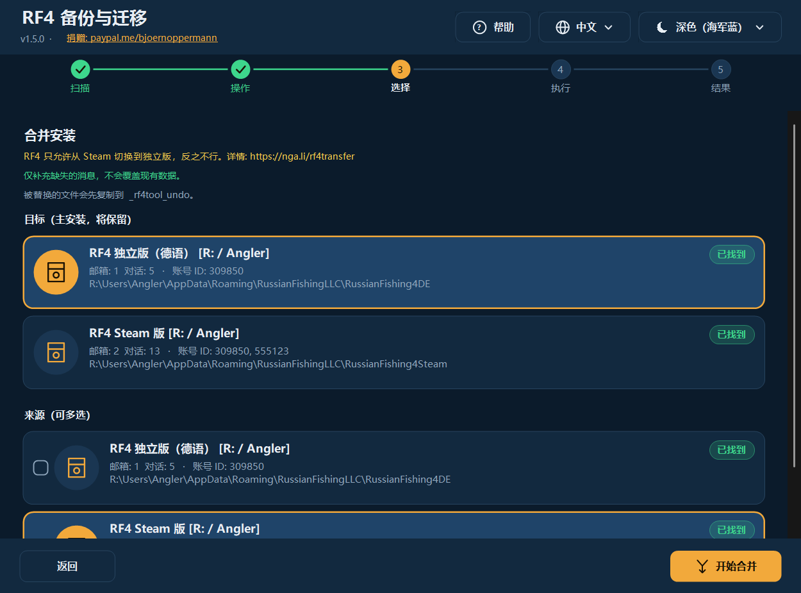
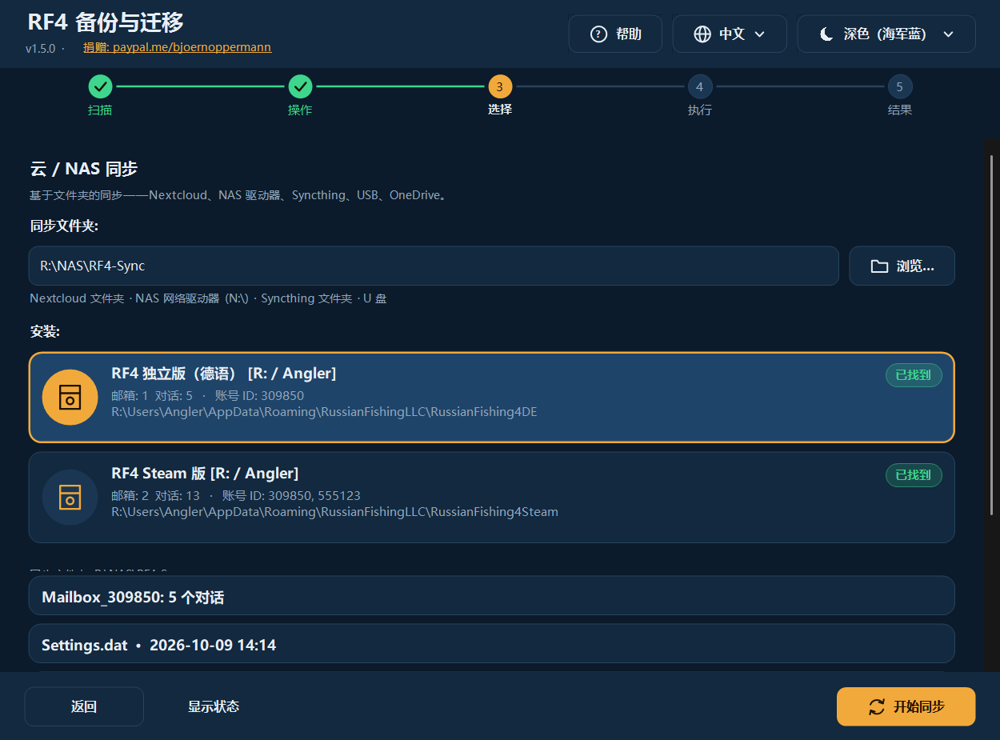
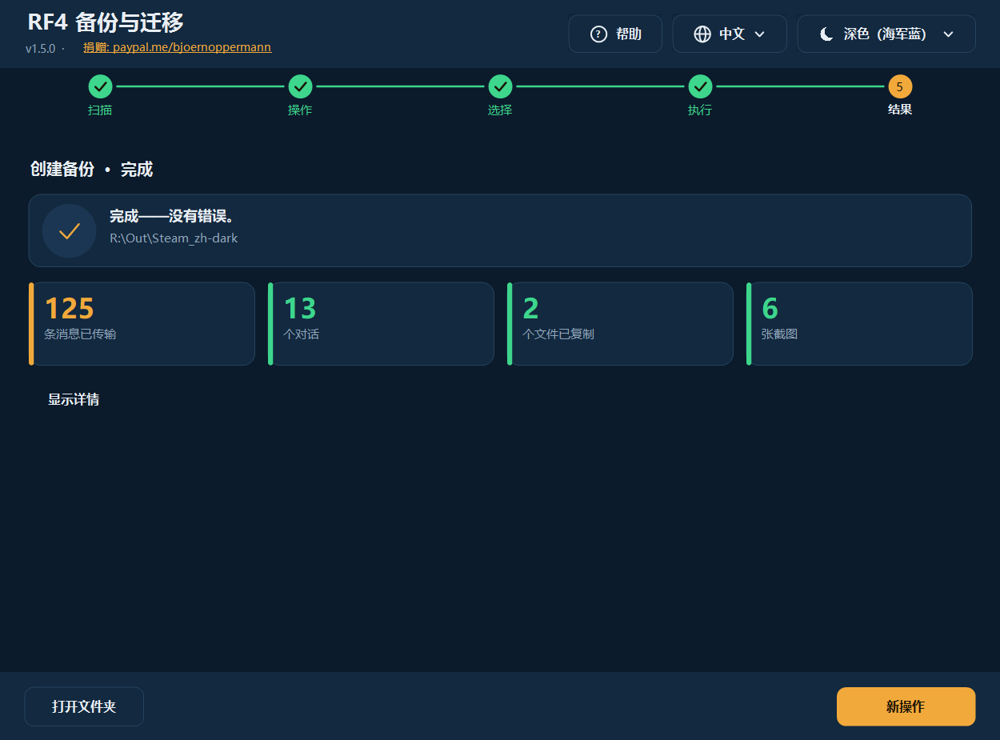
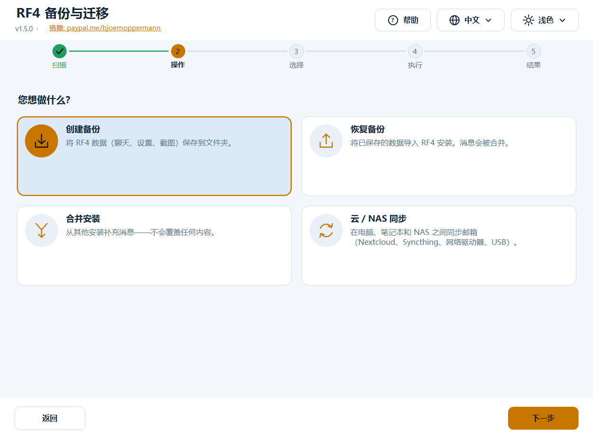
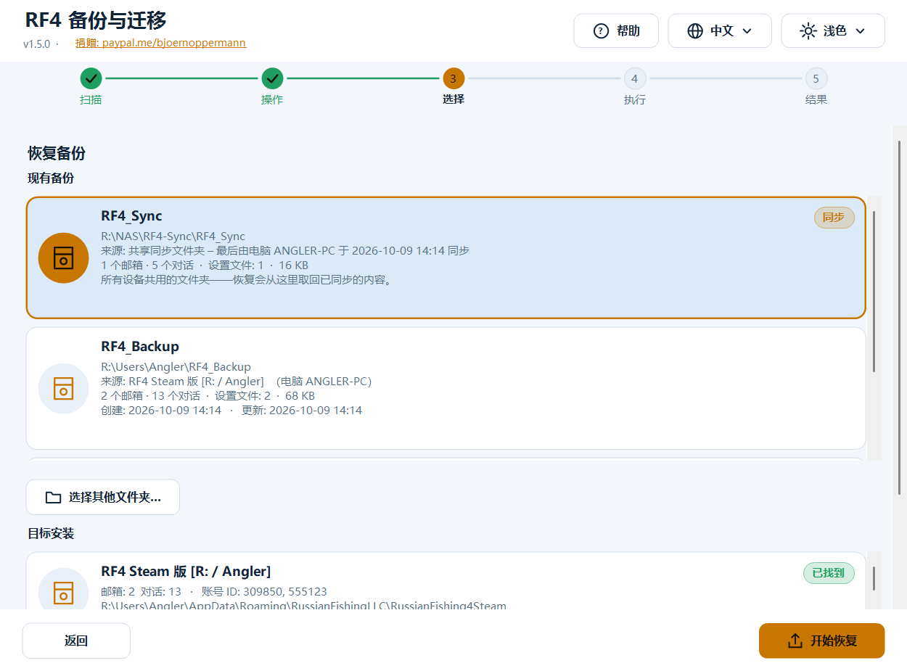
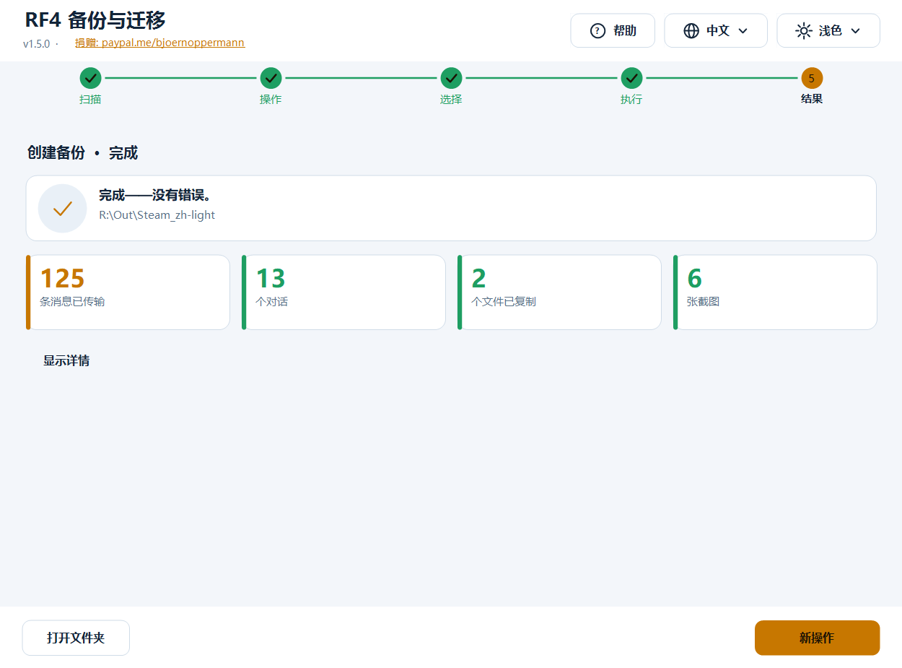

RF4 — 备份与迁移工具
Deutsch · English · 中文 · Русский
免费工具，用于备份、恢复、合并和同步 Russian Fishing 4 的玩家数据：游戏内邮箱（聊天记录）、设置和截图。 支持 Windows（图形界面 + 终端，PowerShell）以及 Linux/macOS（bash）。
- 🌍 四种语言，可随时完整切换： Deutsch · English · 中文 · Русский —— 其他语言只需添加一个文本文件
- 🎨 深色 / 浅色自动切换（跟随 Windows，也可手动选择）—— 其他外观同样只需一个文本文件
- 🖥️ 任何显示缩放下都清晰（100 % … 200 %，多显示器）
- 🛡️ 绝不删除任何文件。 被替换的文件会先复制到撤销文件夹
- 🔍 自动查找 独立版、Steam、Wine、Proton、其他用户和其他驱动器
- 📍 每个备份都记录来自哪个安装、何时创建；也可以从同步文件夹 / NAS 恢复
- ❓ 帮助按钮会用程序当前的语言打开本指南（带截图）

📄 指南与博客：nga.li/rf4b · 📥 下载：nga.li/rf4dl · 💻 源代码：nga.li/rf4git
目录
快速开始
换电脑或重装系统，三步搞定：
- 旧电脑： 启动程序 → 创建备份 → 选择来源 → 开始备份。
- 把备份文件夹（默认
Users\<用户名>\RF4_Backup）通过 U 盘、NAS 或云盘带到新电脑，并在新电脑上启动一次 RF4 后关闭。 - 新电脑： 启动程序 → 恢复备份 → 在列表中选择备份 → 选择目标安装 → 开始恢复。
进度、背包和渔具保存在 RF4 服务器上，在新电脑上会自动出现。本工具负责本地数据：聊天记录、设置、截图。
安装
| 方式 | 适用 | 做法 |
|---|---|---|
安装程序（rf4sa-backup-full-setup-v1.5.0.exe） | Windows，推荐 | 双击，下一步，完成。创建开始菜单项（图形界面、终端、带截图的指南、卸载），并带有一个可点击链接页面（捐赠、博客、下载、源代码）。无需管理员权限。 |
rf4sa-backup-gui-setup-v1.5.0.exe / rf4sa-backup-cli-setup-v1.5.0.exe | 仅图形界面 / 仅终端 | 同上 |
| 无需安装 | Windows | 右键 rf4sa-backup-gui-v1.5.0.ps1 → 使用 PowerShell 运行 |
| Linux / macOS | bash | bash rf4sa-backup-v1.5.0.sh（需要 bash ≥ 4 和 python3） |
所有程序文件的名称中都带有版本号（rf4sa-backup-gui-v1.5.0.ps1、rf4sa-backup-v1.5.0.ps1、rf4sa-backup-v1.5.0.sh），与安装程序一致。更新时安装程序会替换旧文件。 Windows 要求：Windows PowerShell 5.1（Windows 10/11 已预装；Windows 7 需 WMF 5.1）。Windows 上不需要 Python。
提示“已禁用脚本执行”： 右键启动时，Windows 会为这一次启动自动设置执行策略。如果仍然出现提示： powershell -ExecutionPolicy Bypass -File rf4sa-backup-gui-v1.5.0.ps1
图形界面
分步引导，顶部有五个步骤：扫描 → 操作 → 选择 → 执行 → 结果。 右上角随时可用帮助（❓）、语言（🌐）和外观（☀/☾），界面立即切换，无需重启。帮助按钮会离线在浏览器中打开本指南——使用程序当前设置的语言，并附带相应语言的截图。
1. 扫描
程序会查找所有 RF4 安装：当前用户、其他用户、所有驱动器。已找到的会标出，可能的（尚不存在的）目标显示为灰色。列表可滚动（鼠标滚轮，也可直接在条目上滚动）。

2. 操作
四张卡片：创建备份 · 恢复备份 · 合并安装 · 云 / NAS 同步。
3. 选择
创建备份： 选择来源，勾选要保存的内容（邮箱、Settings.dat、Preferences.dat、Crafting.dat、截图），有多个账号时可只备份*一个*账号，选择目标文件夹。如果该文件夹中已有备份，会显示其来源和日期提示。

恢复备份： 顶部列出所有现有备份，含内容、大小、来源（哪个安装、哪台电脑）和日期（创建/更新），最新的在前。列表包括默认文件夹、曾经使用过的文件夹及其子文件夹，以及同步文件夹（标记为 同步）。用「选择其他文件夹…」可选择别处的备份（U 盘、网络驱动器/NAS）；也可以选择同步文件夹的上一级文件夹（程序会自己找到其中的 RF4_Sync）。然后选择目标安装；备份中包含的内容会自动勾选。

合并： 选择目标（主安装）并勾选一个或多个来源。只补充缺失的消息。

云 / NAS 同步： 输入同步文件夹（Nextcloud、Syncthing、NAS 驱动器、U 盘……），选择安装，开始同步。显示状态 会列出同步文件夹中已有的内容。

4./5. 执行与结果
处理过程中，进度条显示当前行。完成后显示关键数据（传输的消息、对话、复制的文件、截图、跳过、错误）。显示详情 展开完整日志；打开文件夹 在资源管理器中打开目标。

浅色与深色
外观： 默认为「自动（跟随 Windows）」——在 Windows 中切换浅色/深色模式，程序会立即跟随（甚至在运行时）。也可以固定选择一个外观。



语言： 首次启动时按 Windows 语言，否则为英语；您的选择会被保存。 键盘： Tab 在卡片/按钮之间切换，空格/Enter 选择。 高分屏： 程序支持每显示器 DPI（Per-Monitor v2）——文字和图标原生绘制，不是放大的位图。把窗口移到另一台显示器时会自动适应。
终端程序
powershell -ExecutionPolicy Bypass -File rf4sa-backup-v1.5.0.ps1 # 自动选择语言
powershell -ExecutionPolicy Bypass -File rf4sa-backup-v1.5.0.ps1 -Lang zh # 固定：de | en | zh | ru | 自定义
╔════════════════════════════════════════════════════════════╗
║ RF4 备份与迁移 v1.5.0 ║
║ RF4: nga.li/rf4de · Blog: nga.li/rf4b ║
║ 捐赠: paypal.me/bjoernoppermann ║
╚════════════════════════════════════════════════════════════╝
[1] 扫描 – 显示所有安装
[2] 备份 – 将数据保存到文件夹
[3] 恢复 – 从备份导入
[4] 合并 – 合并多个安装
[5] 同步 – 与云/NAS同步
[H] 帮助 / 指南
[L] 切换语言 (中文)
[0] 退出
- 菜单：输入数字。多选：输入数字切换（
1 3 4或1,3），a= 全选，n= 全不选，Enter= 继续，0= 返回。 - **
[H]** 用程序当前语言打开指南（带截图的 HTML）。 - 恢复会以列表显示现有备份（含路径、来源、内容、日期；同步文件夹标有
[同步]），也可手动输入路径——UNC 路径如\\NAS\rf4\RF4_Sync同样可用。 - 每次操作后显示带关键数据的摘要。
- 边框和符号为 Unicode，即使使用中文也能对齐（考虑了双倍宽度）。
RF4_ASCII=1为纯 ASCII（用于旧控制台/日志）。 - 显示中文请使用 Windows Terminal（经典控制台视字体可能显示为方框）。
Linux / macOS：
bash rf4sa-backup-v1.5.0.sh # 按 LANG 自动选择语言，或：
bash rf4sa-backup-v1.5.0.sh -l ru
可识别：Windows 分区（/mnt/*、/run/media/*/*）、Wine 前缀（~/.wine、~/.local/share/wineprefixes/*、Lutris）、Steam Proton（…/steamapps/compatdata/*，包括 Flatpak）。菜单与 Windows 相同（[H] 通过 xdg-open/open 打开指南）。
功能详解
备份什么？
| 项目 | 内容 |
|---|---|
| 邮箱 | 游戏内聊天（Mailbox_<账号ID>\*.dat，JSON）。保存在本地，不在 RF4 服务器上。 |
| Settings.dat | 画面、音频、按键设置 |
| Preferences.dat | 其他游戏设置 |
| Crafting.dat | 制作数据 |
| 截图 | 文档\Russian Fishing 4\Screenshots（包括子文件夹；已有的同名文件绝不覆盖） |
备份
把所选内容复制到目标文件夹。邮箱会被合并而不是盲目覆盖——因此备份到已有文件夹就是*增量*备份。设置文件不同时，程序会先询问。 程序会在备份文件夹中创建 rf4-backup.info：来源（安装、版本、电脑名、用户）、创建、更新以及最近几次备份的简短历史。之后在恢复列表（图形界面、终端、bash）中就能看出备份来自哪里、有多新。该文件是纯文本，各平台都可读取。
恢复
把备份导入某个安装（也可导入空的新安装）。消息会被合并，设置文件只有在确认后才会被替换。如果 RF4 仍在运行，程序会发出警告（只有游戏进程 rf4_x64/rf4_x32 算数——打开的启动器或安装程序不会触发警告）。请先关闭游戏，否则游戏退出时会覆盖您的更改。
从同步文件夹 / NAS / 网络驱动器恢复：
- 已配置的同步文件夹会自动出现在备份列表中（标记为 同步，来源：“最后由电脑 … 于 … 同步”）——直接点击即可。
- 或者用「选择其他文件夹…」导航到那里：同步文件夹、其上一级文件夹或备份文件夹。程序会自己识别所选文件夹中的
RF4_Sync。 - 网络驱动器必须已连接。提示：盘符只在连接它的 Windows 会话中有效——“以管理员身份运行”或在其他会话中，最好使用 UNC 路径（
\\NAS\共享\…）。 - 如果程序在那里什么也没找到，会明确告知（“未找到备份，RF4_Sync 子文件夹中也没有”），而不是悄悄失败。
合并
把目标安装中缺失的所有消息补充进去：
- 每条消息都有唯一 ID（
meta.id）。按 ID 去重——不会出现重复。 - 新消息按时间（
meta.created）插入。 - 只有确实有新消息时才写文件。 先写入临时文件，回读校验（JSON 可再次读取）成功后才替换原文件。
- 原文件会先复制到撤销文件夹。
典型场景：Steam → 独立版、Steam → Steam（新电脑）、独立版 → 独立版、多个旧安装 → 一个新安装。
RF4 官方只允许 Steam → 独立版，不允许反向。详情：nga.li/rf4transfer
云 / NAS 同步
通过共享文件夹（子文件夹 RF4_Sync）双向同步：
- 本地 → 同步： 新消息合并到同步文件夹。
- 同步 → 本地： 同步文件夹中的新消息（来自其他设备）在本地合并。
- 设置文件： 以较新的文件（时间戳）为准；相同则不做处理。
在每台设备上使用同一个文件夹。支持 Nextcloud、Syncthing、OneDrive、网络驱动器（包括 OpenMediaVault/OMV 共享）、U 盘。RF4_Sync\.sync_log 记录了哪台设备最后一次同步以及时间。
撤销文件夹
恢复、合并和同步时，每个将被替换的文件都会先复制到：
<安装>\_rf4tool_undo\<日期_时间>\<文件夹>\<文件>
要撤销更改，把文件从那里复制回去即可。该文件夹不会影响 RF4；您可以随时自行删除。程序绝不会删除它。
语言和外观
一切都是模块化的：语言和外观是简单的文本文件。四种语言和两种外观已内置；其他的会在启动时自动识别——无需重新编译。
添加自己的语言
- 把模板 [
examples/template.lang](examples/template.lang) 复制到
%APPDATA%\rf4-backup\lang\pt.lang（或脚本旁边的 lang\ 文件夹；Linux：~/.config/rf4-backup/lang/pt.lang）。
- 在顶部设置
@code=pt和@name=Português，翻译=右边的文字。缺少的行会自动回退到英语——所以也可以只翻译一部分。 - 重启程序：该语言会出现在语言菜单中（如果与 Windows 语言匹配，甚至会被自动选用）。
占位符 {0}、{1} 必须保留在文本中（它们会被名称/数字替换）。文件编码：UTF-8。指南（帮助按钮）提供四种内置语言版本；自定义语言会打开英文版。
@code=pt
@name=Português
app_title=RF4 Cópia e Migração
menu_backup=Cópia – guardar dados
添加自己的外观
把模板 [examples/template.theme](examples/template.theme) 复制到 %APPDATA%\rf4-backup\themes\<名称>.theme 并修改颜色（#RRGGBB）。@base=dark|light 表示在「自动」模式下它代表哪种 Windows 模式。未设置的颜色取自深色外观。它会出现在外观菜单中。
内置
| 外观 | 说明 |
|---|---|
| 深色（海军蓝） | 深海军蓝，暖琥珀色强调色 |
| 浅色 | 浅蓝灰，较深的琥珀色（已验证对比度） |
对比度（文字/背景 ≥ 7:1，按钮 ≥ 4.5:1）由测试验证。
数据位置
%APPDATA%\RussianFishingLLC\<版本>\Mailbox_<账号ID>\*.dat 聊天（JSON，UTF-8 带 BOM）
%APPDATA%\RussianFishingLLC\<版本>\Settings.dat | Preferences.dat | Crafting.dat
文档\Russian Fishing 4\Screenshots
| 文件夹名 | 含义 |
|---|---|
RussianFishing4DE | RF4 独立版（德语） |
RussianFishing4DE_new | RF4 独立版（德语，新） |
RussianFishing4EN | RF4 独立版（英语） |
RussianFishing4Steam | RF4 Steam 版 |
| （该目录下的其他文件夹） | 自动识别 |
Linux 下相同路径位于相应的 Wine/Proton 前缀内（…/drive_c/users/<名称>/AppData/Roaming/RussianFishingLLC/…）。
本工具自身保存（只有设置，没有游戏数据）：%APPDATA%\rf4-backup\settings.json（语言、外观、同步文件夹、最近使用的备份文件夹）或 ~/.config/rf4-backup/settings.conf；发生意外错误时，同一文件夹中还有 error.log。
安全与验证
- 绝不删除任何文件——不删除游戏数据、备份或撤销文件夹。
- 扫描和备份只从安装中读取。
- 写入操作（恢复/合并/同步）会先把被替换的文件复制到撤销文件夹；消息文件以原子方式写入并回读校验，且只在确有变化时写入。
- 恢复/合并/同步前会检查 RF4 是否在运行（警告）。
- 意外错误不会让程序崩溃：它会显示提示，并把详情写入
%APPDATA%\rf4-backup\error.log。 - 无网络访问（除了您自己指定的同步/备份文件夹），无遥测。源代码完全可读（发布的
.ps1/.sh文件就是代码）。
校验和： 见 CHECKSUMS.txt。
Get-FileHash .\rf4sa-backup-gui-v1.5.0.ps1 -Algorithm SHA256 # Windows
sha256sum rf4sa-backup-v1.5.0.sh # Linux
首次启动前，请将哈希值与 CHECKSUMS.txt（或 nga.li/rf4dl 上的值）比较。
常见问题与故障排除
“未找到安装” RF4 必须至少启动过一次（那时它会创建数据文件夹）。检查 %APPDATA%\RussianFishingLLC 是否存在。其他驱动器上的安装，只要那里有 Users 文件夹就能找到；否则在恢复时*手动*选择目标路径。
我的备份不在列表中 列表显示默认文件夹 RF4_Backup、曾经使用过的文件夹、同步文件夹以及它们的下一级。文件夹含有 Mailbox_* 文件夹、某个 .dat 文件或 Screenshots 文件夹即视为备份。其他位置请用「选择其他文件夹…」。
从 NAS / 同步文件夹恢复不成功 检查驱动器是否已连接且可访问（资源管理器）。以“管理员身份”启动时，程序看不到普通会话中的网络驱动器——请使用 UNC 路径。可以选择同步文件夹本身、其上一级文件夹，或列表中标记为 同步 的条目。如果仍提示“未找到备份”，说明该文件夹（尚）没有 Mailbox_* 数据：请先在某台设备上执行一次*同步*。
恢复后看不到聊天记录 导入时 RF4 必须已关闭。可重新导入（可重复执行）或从撤销文件夹复制回来。另外请核对账号 ID：聊天记录位于您账号的 ID 下（Mailbox_<ID>）。
只开了启动器却出现“RF4 正在运行”警告 现在不应再发生：只有 rf4_x64/rf4_x32 算数。如果仍出现，说明游戏还在后台运行（任务管理器）。
列表没有显示所有条目 列表可以滚动：鼠标滚轮（也可直接在条目上滚动）或右侧的滚动条。窗口可以放大。
“无法运行脚本” powershell -ExecutionPolicy Bypass -File <文件>；对于下载的文件，可能需要右键 → 属性 → 解除锁定。
终端中中文 / Русский 显示为方框 请使用 Windows Terminal 或带有 CJK/西里尔字符的字体。图形界面不受影响。
图形界面对我的屏幕太大 起始大小会根据屏幕调整；窗口可以改变大小，空间不足时内容可滚动。
Steam 云会覆盖文件吗？ 如果为 RF4 启用了 Steam 云，Steam 安装中可能发生。恢复后请离线启动 Steam，或暂时关闭该游戏的云同步。
**Linux：缺少 python3** sudo apt install python3（Debian/Ubuntu）。Python 仅用于合并 JSON 文件。
卸载
- 安装程序版本： 开始菜单 → RF4 Backup Tool → 卸载 RF4 Backup Tool（或 Windows 设置 → 应用）。卸载程序只会删除程序文件，并询问是否一并删除保存的设置（语言、外观、同步文件夹、您自己的语言/外观文件）。您的 RF4 游戏数据和备份绝不会被触碰。
- 无安装程序： 直接删除文件即可。可选删除文件夹
%APPDATA%\rf4-backup（Linux：~/.config/rf4-backup）。
设置与环境变量
| 变量 | 作用 |
|---|---|
RF4_LANG=xx | 设置语言（de、en、zh、ru 或自定义） |
RF4_ASCII=1 | 终端：纯 ASCII 显示 |
RF4_BACKUP_DIRS=a;b（Linux：a:b） | 额外搜索备份的文件夹 |
RF4_SCAN_USERS=a;b（Linux：a:b） | 额外搜索安装的“Users”文件夹 |
RF4_NO_DRIVE_SCAN=1 | 不搜索所有驱动器 |
RF4_THEME_BASE=dark|light | 强制“自动”使用的 Windows 模式（测试） |
RF4_GUI_SCALE=1.5 | 强制图形界面缩放（测试/截图） |
RF4_FAKE_RUNNING=rf4_x64 | 模拟游戏正在运行（测试） |
开发、测试、构建
源代码位于 src/：
| 文件 | 内容 |
|---|---|
core.ps1 | 共用逻辑（扫描、合并、备份/恢复、同步、查找备份、备份信息、统计、配置、加载语言/外观、打开帮助） |
lang/*.lang | 所有文字（每种语言一个文件） |
themes/*.theme | 颜色（每种外观一个文件） |
ui.cs | 自绘图形界面组件（按钮、卡片、进度、步骤条……），支持 DPI |
gui.ps1、cli.ps1 | 界面 |
cli.sh | Linux/macOS 脚本 |
build.ps1 会生成发布的单文件，文件名带版本号（语言、外观和 C# 代码被嵌入；bash 的语言表由 .lang 文件生成——所有平台共用一个来源），并生成 HTML 指南（docs/guide.<语言>.html，由四个 README 生成，带截图）。
powershell -ExecutionPolicy Bypass -File build.ps1
powershell -ExecutionPolicy Bypass -File tests\Test-Core.ps1 [-RealDataDir <邮箱文件夹>] # 逻辑、语言/外观、对比度、合并、同步、备份信息
powershell -ExecutionPolicy Bypass -File tests\Test-Cli.ps1 # 终端：所有语言、边框宽度、流程
powershell -STA -ExecutionPolicy Bypass -File tests\Test-Gui.ps1 # 图形界面：面板 × 外观 × 语言 × 缩放、溢出、对话框、滚轮
powershell -STA -ExecutionPolicy Bypass -File tests\Test-RealFlow.ps1 # 在真实用户配置中的假安装上，用真实对话框测试所有功能
bash tests/test-sh.sh # Linux 脚本
powershell -STA -ExecutionPolicy Bypass -File tools\make-screenshots.ps1 # 为指南生成截图（每种语言，演示数据）
用真实感数据安全测试： tools\fake-installs.ps1 -Create 会基于真实安装创建假安装 RussianFishing4TEST_A/_B/_C（对话部分重叠、第二个账号、设置不同）；-Remove 只删除带标记文件的假安装。原始安装绝不会被修改。
新增文字：把键添加到所有 src/lang/*.lang（测试会检查每个键在每种内置语言中都存在且占位符一致；tools\add-lang-keys.ps1 可帮忙），然后运行 build.ps1。 修改指南：在全部四个 README 中同步修改（相同的章节/图片），然后运行 build.ps1 和 tools\make-screenshots.ps1。 安装程序：用 Inno Setup 6 编译 installer/*.iss（ISCC.exe installer\rf4sa-backup-full.iss）。
更新日志
1.5.0
- 全新界面： 完全重新绘制，任何 DPI 下都清晰，深色/浅色自动跟随 Windows，顶部有帮助/语言/外观菜单，用卡片代替列表，步骤条、进度条、带关键数据的结果。底部的日志窗口已取消（详情可展开）。
- 恢复界面（图形界面、终端、bash）列出现有备份，含来源和日期（
rf4-backup.info）；使用过的文件夹会被记住。从同步文件夹/NAS 恢复可从列表或通过（上一级）文件夹进行。 - 程序语言的帮助： 帮助按钮（图形界面）、
[H]（终端/bash）和开始菜单会打开 HTML 指南，并附带与语言一致的截图；四种语言版本内容完全相同。 - 模块化： 语言为
lang/*.lang，外观为themes/*.theme——自己的文件会被自动识别。 - 文件名带版本号（
rf4sa-backup-gui-v1.5.0.ps1……），安装程序会替换旧文件。 - 安装程序： 开始菜单项包括指南和卸载，可点击的链接，卸载时询问是否删除保存的设置。
- 修复： 消息对话框（例如“RF4 正在运行”）会因 .NET 错误崩溃并中断恢复/合并/同步；打开的启动器会误触发警告；鼠标滚轮无法滚动列表；恢复时无法识别同步文件夹的上一级。
- 终端和 bash： 边框/符号（兼顾 CJK 宽度）、彩色摘要、ASCII 回退。
- 超过 380 项自动化检查（逻辑、终端、图形界面、带真实对话框的真实数据流程、Linux），包括外观的对比度检查。
1.4.0 共用核心、完整翻译（DE/EN/ZH/RU）、修复（从未找到自己的安装、单个文件导致崩溃、恢复时的截图）、撤销文件夹、RF4 运行时警告。 1.3.0 i18n（仅菜单）、Inno Setup 安装程序 · 1.2.0 云/NAS 同步 · 1.1.x 账号 ID、多来源合并 · 1.0.0 首次发布
链接与许可
| RF4 官方（德语 / 英语） | nga.li/rf4de · nga.li/rf4en |
| Steam 上的 RF4 | nga.li/rf4steam |
| Steam → 独立版迁移 | nga.li/rf4transfer |
| 论坛 | nga.li/rf4forum |
| 文章与指南 | nga.li/rf4b |
| 源代码（Codeberg） | codeberg.org/Natural78/rf4-backup-tool |
MIT 许可证——可自由使用、修改和分发。如果您喜欢这个工具：paypal.me/bjoernoppermann ☕